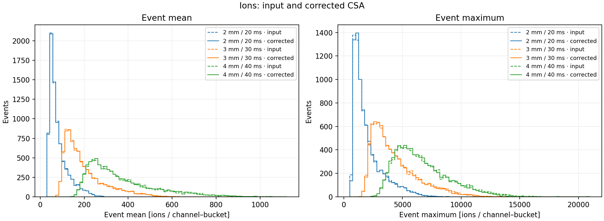
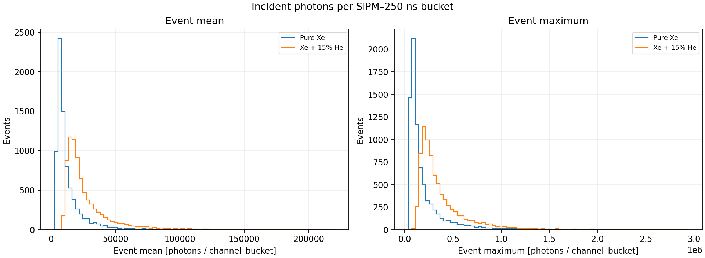
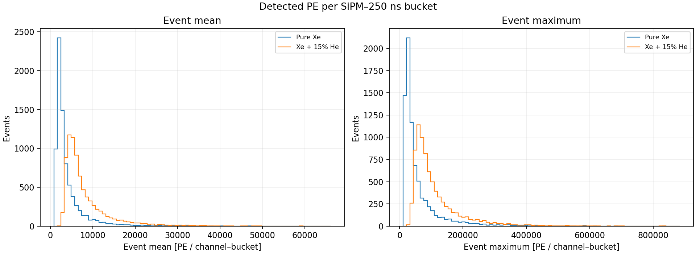
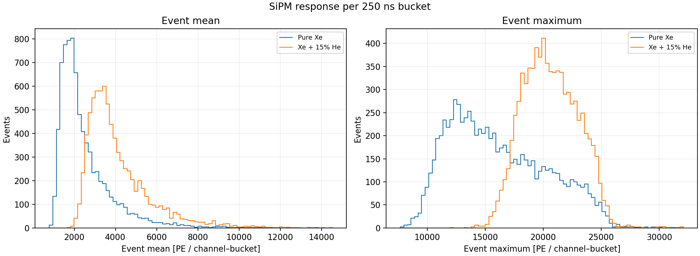
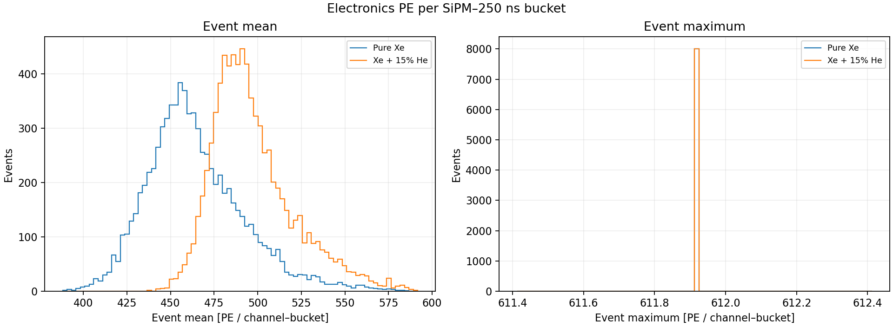

Electron operating points: pre-electronics pulses and event sums
Historical 10-150 cm production: event-level electronics files were retired on 2026-11-08. This report is regenerated from the preserved numerical summary. 8,000 paired bb0nu events. Each event contributes one mean and one maximum. Ions use pixels with positive input ions; electrons use SiPM buckets with positive incident photons. The same cells enter all response stages, including signed reconstructed values. No amplitude or S/N cut is applied. Ion pitches 2, 3 and 4 mm use 20, 30 and 40 ms frames. Both electron gases use 10 mm pitch and 250 ns buckets. CSA results use the corrected reconstruction and the production 0.5 ENC modelling tolerance. These pulse summaries describe the occupied input support; event energy requires the complete response history.
| Stage | Events | Unit | Mean: average | Mean: median | Maximum: average | Maximum: median |
|---|---|---|---|---|---|---|
| ions 2mm corrected | 8000 | ions | 81.870 | 67.147 | 2030.484 | 1572.565 |
| ions 2mm input | 8000 | ions | 81.890 | 67.211 | 2027.444 | 1570.000 |
| ions 3mm corrected | 8000 | ions | 199.811 | 170.505 | 4303.872 | 3766.422 |
| ions 3mm input | 8000 | ions | 200.254 | 170.582 | 4342.675 | 3787.000 |
| ions 4mm corrected | 8000 | ions | 364.472 | 320.348 | 6593.963 | 6159.345 |
| ions 4mm input | 8000 | ions | 367.585 | 321.506 | 6759.597 | 6245.000 |
| pure xe detected | 8000 | PE | 4183.219 | 2737.860 | 62512.329 | 35683.500 |
| pure xe photons | 8000 | photons | 13944.032 | 9124.571 | 208350.437 | 118787.000 |
| pure xe readout | 8000 | PE | 464.249 | 460.231 | 611.913 | 611.913 |
| pure xe sensor | 8000 | PE | 2516.532 | 2090.253 | 16132.001 | 15426.476 |
| xe he15 detected | 8000 | PE | 8320.653 | 6267.466 | 114773.285 | 85629.000 |
| xe he15 photons | 8000 | photons | 27735.572 | 20890.062 | 382535.649 | 285552.000 |
| xe he15 readout | 8000 | PE | 497.326 | 492.655 | 611.913 | 611.913 |
| xe he15 sensor | 8000 | PE | 4135.184 | 3677.519 | 20613.508 | 20466.305 |




